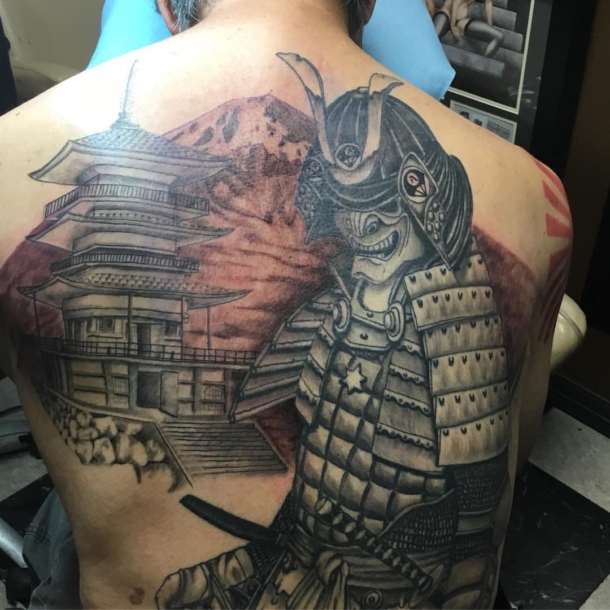
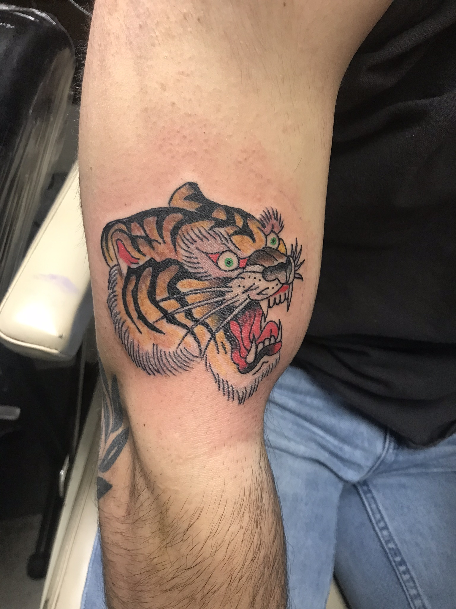
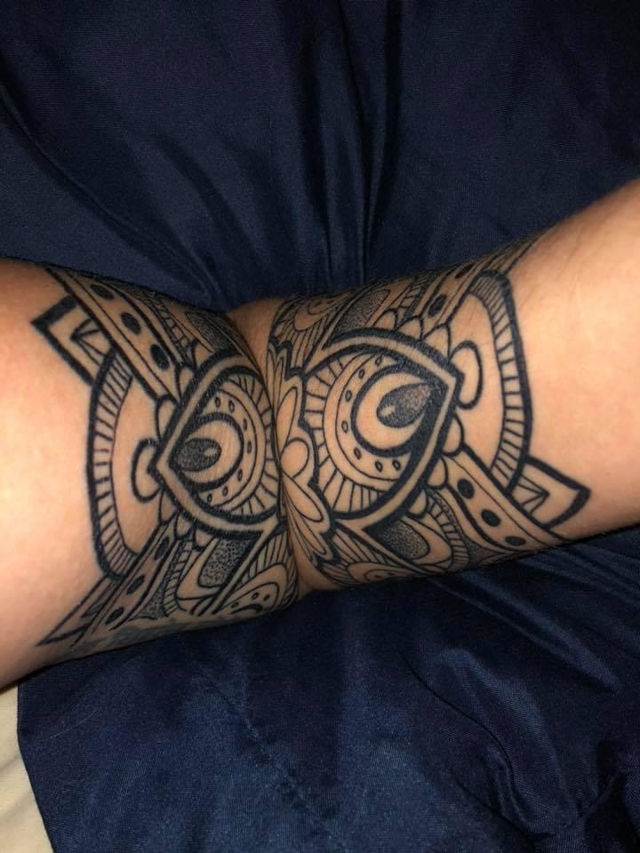
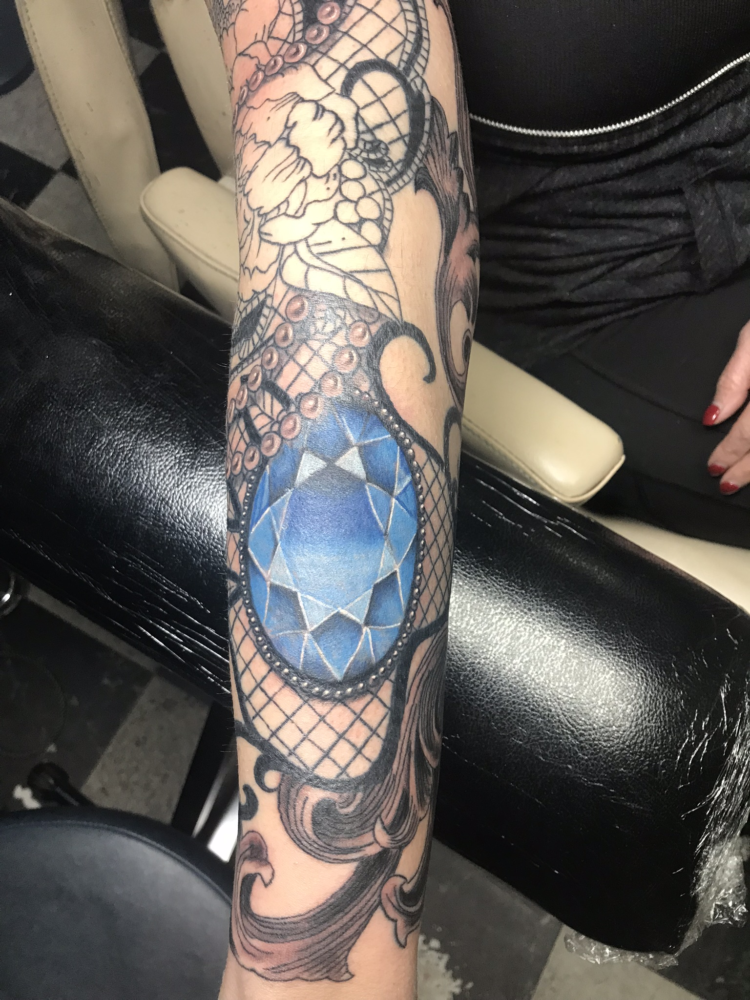
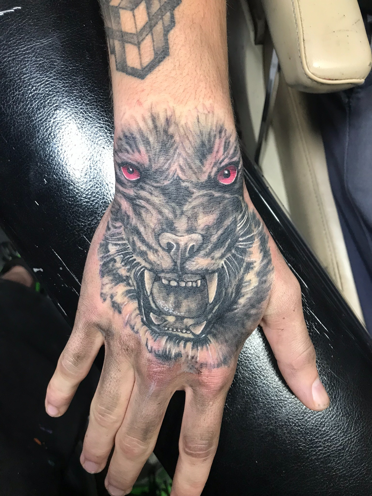
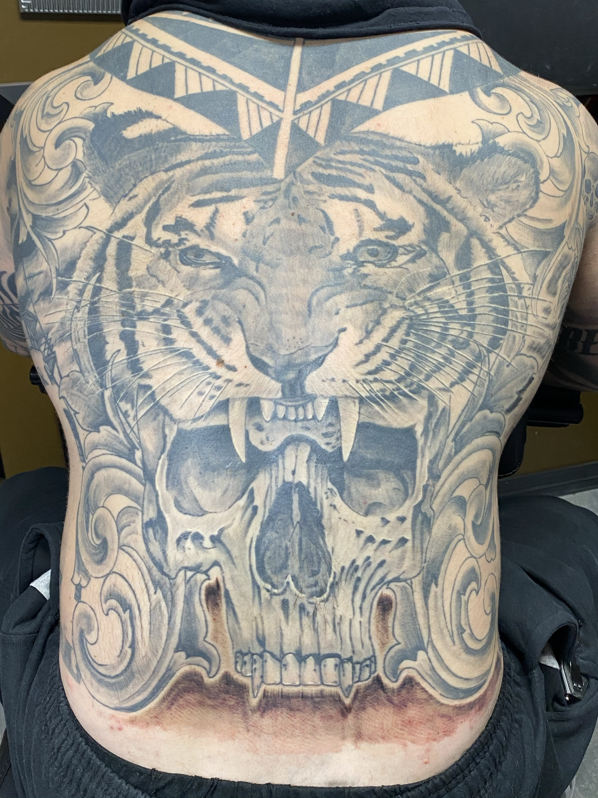
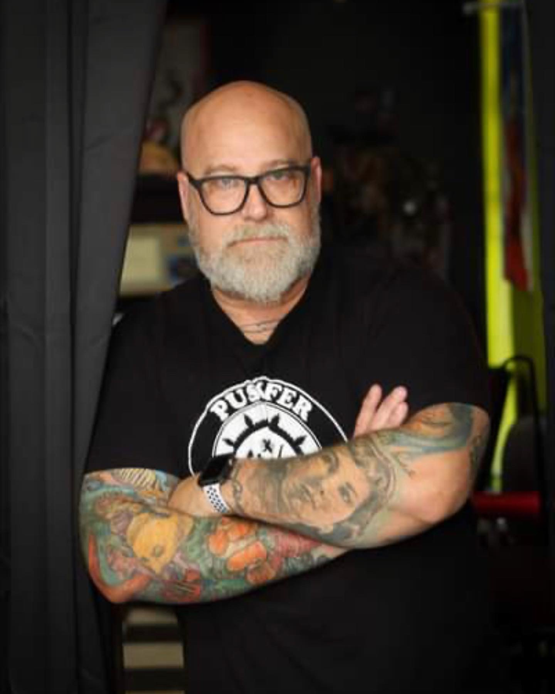

Cover-Ups
Thoughtful redesigns for tattoos that need a second life—planned around the existing piece, placement, and long-term result.
View work →Oklahoma City • Est. 2006
Custom-drawn work, cover-ups, Japanese, horror, traditional, color, and black-and-gray tattoos from an established Oklahoma City shop.
What we do
A stronger site lets each specialty earn its own search visibility while giving potential clients immediate proof that the style fits.
Thoughtful redesigns for tattoos that need a second life—planned around the existing piece, placement, and long-term result.
View work →Large-scale dragons, koi, masks, florals, and flowing compositions designed to work with the body.
View work →Dark, cinematic artwork ranging from iconic characters to original concepts with texture, depth, and atmosphere.
View work →Bold lines, confident color, and timeless imagery built with the visual clarity that makes traditional work endure.
View work →Selected work
Selected work by Josh demonstrates large-scale Japanese composition, black-and-gray detail, traditional tattooing, linework, and saturated color.

Josh Poindexter portfolio

Josh Poindexter portfolio

Josh Poindexter portfolio

Josh Poindexter portfolio

Josh Poindexter portfolio

Josh Poindexter portfolio
Meet the artists
Individual artist pages give every artist a searchable portfolio, clear specialties, direct reviews, and their own booking path.

Owner • Artist
Owner and artist at Tornado Tattoo since 2006, with more than two decades of experience creating custom work in Oklahoma.
View Josh’s work →Artist
An artist with a background in education and a focus on illustrative linework, thoughtful composition, and black-and-gray pieces.
View Selena’s future portfolio →Established in Oklahoma City
Tornado Tattoo opened during the first year tattooing became legal in Oklahoma. That history, Josh’s experience, and the shop’s local roots create a credibility story that generic “best tattoo shop” language cannot match.
“Josh has done and continues to do great work. I came in with an idea and Josh did a great job bringing my dream to life.”— Greg Beer
Before you book
Walk-ins are welcomed when artist availability allows. Calling before you drive over is the best way to confirm same-day availability.
Pricing depends on the size, placement, color, complexity, and estimated time required. A consultation gives the artist enough detail to provide a realistic estimate.
Yes. References help communicate the direction, but the final tattoo is custom drawn to fit the client, placement, and artist’s approach.
Start with the artist whose portfolio best matches the style you want. The shop can also help route your project to the right artist during consultation.
Ready when you are
3306 N MacArthur Blvd
Oklahoma City, OK 73122
Tuesday–Saturday
12:00 PM–8:00 PM